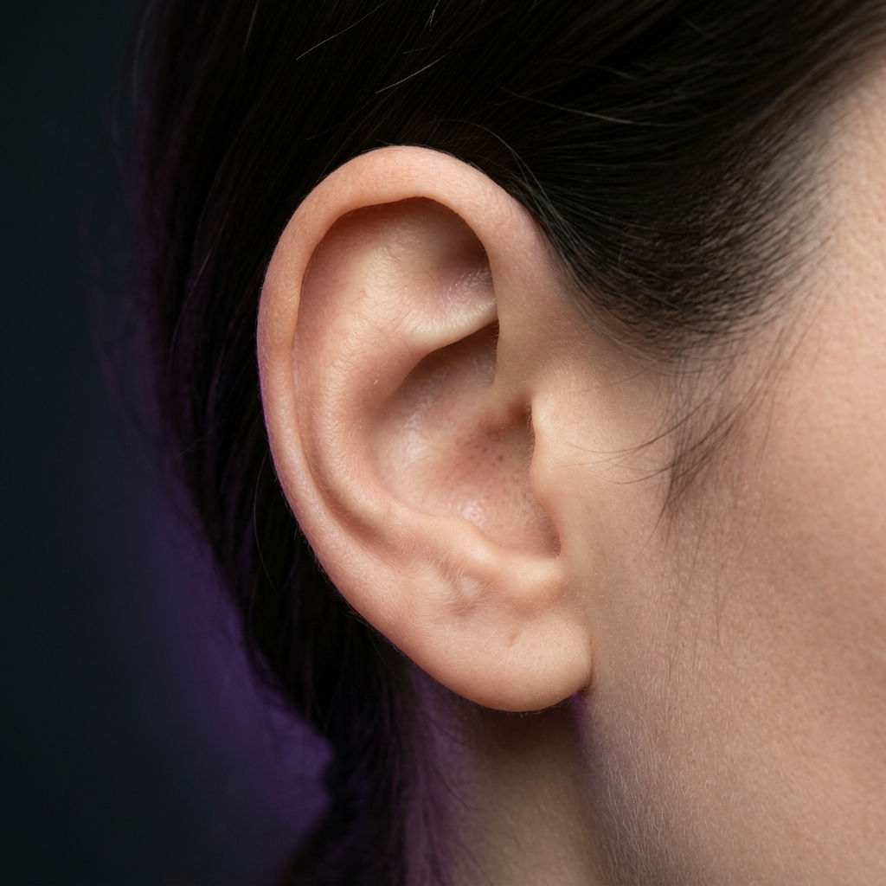

Bem-vindo ao nosso catálogo de joias
Explore nossa curadoria de joias biocompatíveis em Titânio ASTM F-136 e Aço Cirúrgico, desenvolvidas para valorizar a sua essência com conforto, segurança e sofisticação.
Envio Cuidadoso
Embalagem higienizada, lacrada individualmente.
Compra Confiável
Atendimento transparente e acolhedor direto no WhatsApp com a piercer.
Orientação de Medidas
Ajudamos você a escolher o modelo e tamanho ideal para a sua anatomia.
Mapas Anatômicos de Piercing
Selecione o ponto anatômico desejado para explorar as joias biocompatíveis em Titânio e Aço ideais para cada perfuração.

Os Metais que Tocam Sua Pele
A boa adaptação da sua joia depende da qualidade e pureza do material. Selecionamos peças em titânio e aço cirúrgico para você usar com conforto total todos os dias.
Titânio ASTM F-136
Material HipoalergênicoTotalmente livre de níquel, muito mais leve que o aço e 100% seguro. Não oxida, não escurece e é a melhor escolha para quem tem pele sensível ou alergias.
- ✓ Não oxida nem escurece com o tempo
- ✓ Rosca interna suave que não machuca
- ✓ Perfeito para uso diário contínuo
Aço Cirúrgico 316L
Brilho Espelhado & ResistênciaMetal resistente com polimento espelhado clássico. Apresenta alta durabilidade e brilho prateado vivo, com excelente custo-benefício para compor mixes em furos cicatrizados.
- ✓ Polimento de alto brilho reflexivo
- ✓ Excelente custo-benefício em joias
- ✓ Perfeito para trocas do dia a dia
Perfuração
Ambiente privativo com rigor cirúrgico
Capão Redondo — Zona Sul, São Paulo - SP
Terça a Sábado das 13h às 18h
Somente com hora marcada
⚠️ VALOR DA PEÇA AVULSA. PERFURAÇÃO NÃO INCLUSA (PROCEDIMENTO REALIZADO À PARTE NO ESTÚDIO EM SP COM HORA MARCADA).
Joalheria Pensada para a Anatomia do Seu Corpo
O estúdio NG Piercing nasceu da convicção de que cada orelha e cada corpo carregam uma anatomia singular. Trabalhamos exclusivamente com joias selecionadas a dedo, com acabamento impecável, rosca interna suave e materiais seguros para garantir conforto e durabilidade.
Em nosso estúdio no Capão Redondo (Zona Sul de São Paulo), recebemos você com hora marcada para um atendimento acolhedor, calmo e individualizado. Cada procedimento segue rigorosos cuidados de higiene e esterilização, com agulhas descartáveis e todo carinho que você merece.